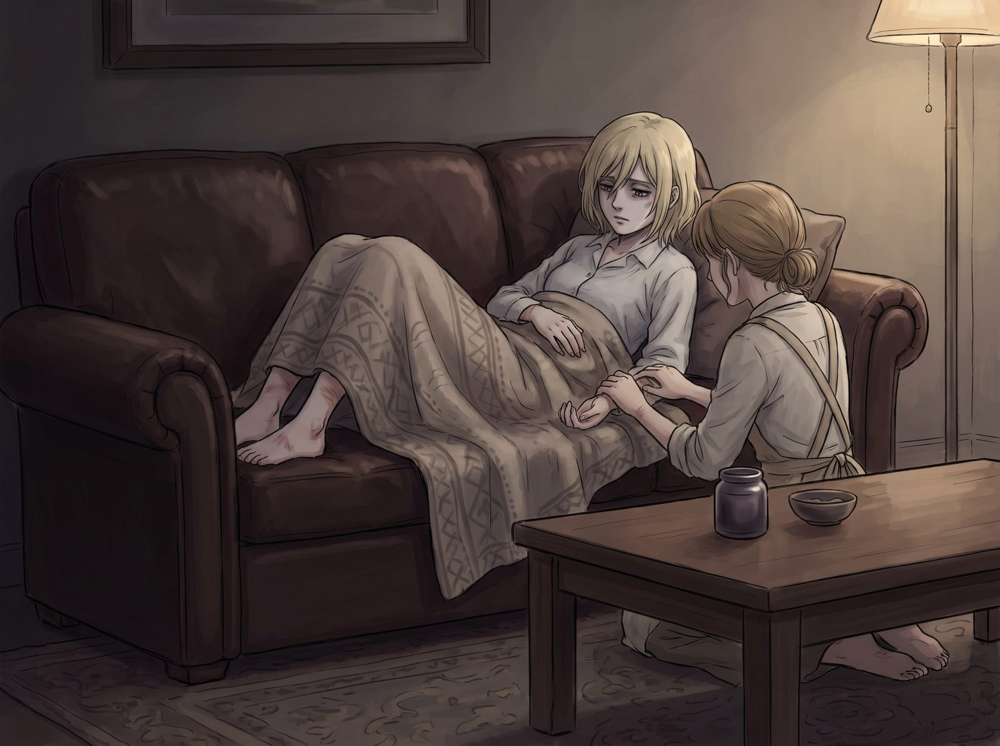

藥膏與傲嬌

客廳的真皮長沙發上，氣氛陷入了一種極其微妙的低氣壓。
Victoria 整個人僵硬地陷在靠墊裡，身上裹著一條薄薄的羊絨毯，精緻的下巴揚得高高的，臉色陰沉得能滴出水來。在她白皙修長的腳踝、小腿肚以及手腕內側，幾處被波特蘭野蚊子叮咬出的紅腫硬包格外扎眼，正散發著惱人的灼熱感。
「別亂動哦，Victoria，抓破了會留印子的。」
Kate 正安靜地半跪在地毯上的軟墊邊，身上繫著乾淨的亞麻圍裙。她面前的茶几上擺著一個小巧的深色磨砂玻璃罐，裡面裝著她親手用天然蜂蠟、冷壓甜杏仁油，以及天台新鮮採摘的薄荷與洋甘菊精油慢火熬製的草本鎮靜膏。
Kate 用乾淨的竹木小挑棒挖出一小團淡綠色的半透明膏體，放在指尖輕輕揉開。隨著體溫的融化，一股極其清涼、帶著純淨草本微苦與甘甜的天然香氣在客廳裡緩緩瀰漫開來。
「這東西最好真的有用，Marsh。」Victoria 偏過頭，目光落在天花板的水晶吊燈上，語氣裡依舊維持著名媛特有的挑剔，「如果明天我的皮膚科醫生說這引發了接觸性皮炎，我就會把這罐綠色泥漿的成分送去瑞士實驗室做全面毒理檢測。」
「放心吧，裡面的洋甘菊只浸泡了兩週，性質非常溫和的。」Kate 溫柔地笑了笑，完全沒有把她的威脅放在心上。
她的指尖極其輕柔地覆上了 Victoria 腳踝處那個腫得最厲害的紅包。
「嘶……」
冰涼柔滑的膏體剛一接觸到滾燙發癢的皮膚，Victoria 忍不住倒吸了一口涼氣，整條小腿下意識地繃緊了一下。但僅僅過了兩秒鐘，那股霸道而溫潤的薄荷涼意便迅速滲透進毛孔，瞬間將叫囂著的奇癢與灼痛鎮壓了下去。那種從煩躁的皮肉深處泛起的清涼感，讓她緊繃了一整晚的神經奇蹟般地鬆弛了下來。
Kate 低著頭，神情專注而認真，指腹以極其輕緩的打圈手法將藥膏一點點推開、揉勻，直到皮膚完全吸收。她的動作輕得像是在拂拭一片嬌嫩的花瓣，甚至貼心地避開了敏感的骨節處。
「鎖骨這裡還有一個。」Kate 抬起眼，輕聲提醒道。
Victoria 微微一愣，低頭看著 Kate 那雙清澈溫暖的棕色眼睛，以及對方眼底毫無雜質的關切。她抿了抿嘴唇，臉頰上浮現出一抹極難察覺的微紅，隨後有些不自然地將睡袍領口微微拉開了一點，露出一小片肌膚。
Kate 再次取了一點藥膏，指尖帶著微涼的草本氣息，輕輕按在了紅印上。
客廳裡一時安靜了下來，只有廚房冰箱低微的運轉聲，以及二樓暗房隱約傳來的吹風機聲響。
「……好了。」Kate 蓋上玻璃罐的木蓋，用紙巾擦了擦手指，抬頭溫柔地看著她，「大概十分鐘後紅腫就會消退大半，今晚應該能睡個好覺了。」
Victoria 低頭看著腳踝和手腕上泛著淡淡光澤的肌膚，那種難以忍受的奇癢確實已經徹底平息，只留下一陣舒服的清涼。
她彆彆扭扭地收回腿，將真絲睡袍的下擺重新整理得一絲不苟，手指無意識地摩挲著茶几上的咖啡杯邊緣。過了足足十幾秒，她才清了清嗓子，視線依然游移在窗外的夜景上，聲音放得極低，甚至有些含糊不清：
「……雖然包裝很簡陋，但……勉強算妳配方合格了。」
「嗯？」Kate 眨了眨眼，笑著偏了偏頭。
Victoria 臉頰的紅暈更深了一分，她有些惱羞成怒地轉過頭，咬了咬下唇，飛快地從牙縫裡擠出一句話：
「我是說……謝謝，Kate。下週去西雅圖，我會讓私人買手給妳帶一套真正的法式有機精油萃取器回來，免得妳總是用那些看起來像中世紀巫術一樣的破玻璃瓶。」
Kate 忍不住彎起眼睛笑了起來，笑容像清晨的陽光一樣明亮。她輕輕握了握 Victoria 冰涼的手指，柔聲說道：「那我就先謝謝妳的贊助啦，Chase 小姐。」